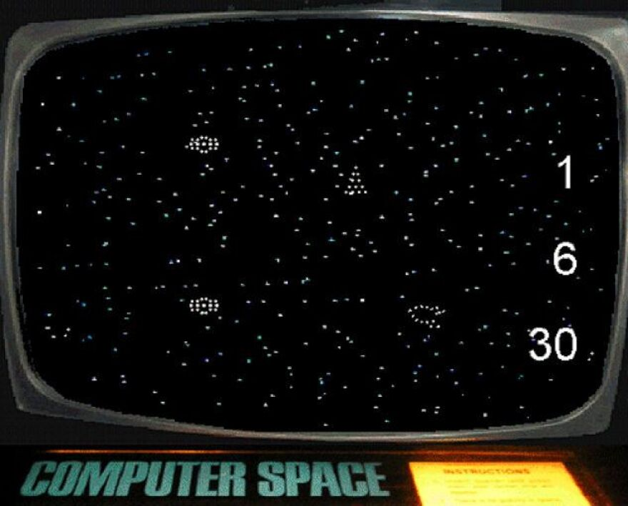

Early video games use interactive electronic devices with various display formats.
The earliest example is from 1947—a "Cathode-ray tube amusement device" was filed for a patent on 25 January 1947, by Thomas T. Goldsmith Jr. and Estle Ray Mann, and issued on 14 December 1948, as U.S. Patent 2455992. Inspired by radar display technology, it consists of an analog device allowing a user to control the parabolic arc of a dot on the screen to simulate a missile being fired at targets, which are paper drawings fixed to the screen. Other early examples include Christopher Strachey's Draughts game, the Nimrod computer at the 1951 Festival of Britain; OXO, a tic-tac-toe Computer game by Alexander S. Douglas for the EDSAC in 1952; Tennis for Two, an electronic interactive game engineered by William Higinbotham in 1958; and Spacewar!, written by MIT students Martin Graetz, Steve Russell, and Wayne Wiitanen's on a DEC PDP-1 computer in 1961. Each game has different means of display: NIMROD has a panel of lights to play the game of Nim, OXO has a graphical display to play tic-tac-toe, Tennis for Two has an oscilloscope to display a side view of a tennis court, and Spacewar! has the DEC PDP-1's vector display to have two spaceships battle each other.
These preliminary inventions paved the way for the origins of video games today. Ralph H. Baer, while working at Sanders Associates in 1966, devised a control system to play a rudimentary game of table tennis on a television screen. With the company's approval, Baer built the prototype "Brown Box". Sanders patented Baer's inventions and licensed them to Magnavox, which commercialized it as the first home video game console, the Magnavox Odyssey, released in 1972. Separately, Nolan Bushnell and Ted Dabney, inspired by seeing Spacewar! running at Stanford University, devised a similar version running in a smaller coin-operated arcade cabinet using a less expensive computer. This was released as Computer Space, the first arcade video game, in 1971. Bushnell and Dabney went on to form Atari, Inc., and with Allan Alcorn, created their second arcade game in 1972, the hit ping pong-style Pong, which was directly inspired by the table tennis game on the Odyssey. Sanders and Magnavox sued Atari for infringement of Baer's patents, but Atari settled out of court, paying for perpetual rights to the patents. Following their agreement, Atari made a home version of Pong, which was released by Christmas 1975. The success of the Odyssey and Pong, both as an arcade game and home machine, launched the video game industry. Both Baer and Bushnell have been titled "Father of Video Games" for their contributions.